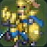
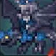

CLASS LIBRARY
兵种资料
54 种兵种的考试、开放条件、特性与精通技能，按阶段排列。
共创表采用推荐考试技能；普通考试仍以当前菜单的通过率、票证和条件为准。任职特性随兵种变化，精通所得需完成精通后再检查可装备项。
基础 · 2 种
| 兵种 | 移动 | 备考技能参考 | 开放条件 | 技能经验加成 | 特性 | 精通技能 | 可用阶段 |
|---|---|---|---|---|---|---|---|
| 平民 | 4 | 不适用 | 初始基础兵种。 | 无 | 步兵 | 【战斗的基本】（15） | 第一部；仍须开放考试并满足该职业的特殊解锁。 |
| 贵族 | 4 | 不适用 | 初始基础兵种。 | 无 | 步兵 | 【战斗的基本】（15） | 第一部；仍须开放考试并满足该职业的特殊解锁。 |
初级 · 5 种
| 兵种 | 移动 | 备考技能参考 | 开放条件 | 技能经验加成 | 特性 | 精通技能 | 可用阶段 |
|---|---|---|---|---|---|---|---|
| 斗士 | 4 | 剑术/斧术/格斗术任一项 D，初级考试票证×1 | 剑术+1、斧术+1、步兵术+1 | 斗士系 · 步兵 | 【攻击的基本】（30） | 第一部；仍须开放考试并满足该职业的特殊解锁。 | |
| 猎兵 | 4 | 剑术/弓术任一项 D，初级考试票证×1 | 剑术+1、弓术+1、步兵术+1 | 猎兵系 · 步兵 | 【狩猎的基本】（30） | 第一部；仍须开放考试并满足该职业的特殊解锁。 | |
| 士兵 | 4 | 斧术/枪术任一项 D，初级考试票证×1 | 枪术+1、斧术+1、重装术+1 | 士兵系 · 重装 | 【防卫的基本】（30） | 第一部；仍须开放考试并满足该职业的特殊解锁。 | |
| 飞鸵兵 | 5 | 枪术/斧术任一项 D，且马术 E+，初级考试票证×1 | 枪术+1、马术+1、飞行术+1 | 飞行系 · 骑兵，【乘降术】 | 【攻势的基本】（30） | 第一部；仍须开放考试并满足该职业的特殊解锁。 | |
| 诅咒师 | 4 | 黑魔术/白魔术任一项 D，初级考试票证×1 | 黑魔术+1、白魔术+1 | 魔道系 · 步兵 | 【魔道的基本】（30） | 第一部；仍须开放考试并满足该职业的特殊解锁。 |
中级 · 12 种
| 兵种 | 移动 | 备考技能参考 | 开放条件 | 技能经验加成 | 特性 | 精通技能 | 可用阶段 |
|---|---|---|---|---|---|---|---|
| 剑客 | 5 | 剑术 C，中级考试票证×1 | 剑术+2、步兵术+1 | 斗士系 · 步兵，【战技装备+1】【剑必杀+3】 | 【技巧精湛】（60） | 第一部；仍须开放考试并满足该职业的特殊解锁。 | |
| 土匪 | 5 | 剑术/斧术任一项 C，中级考试票证×1 | 斧术+2 | 斗士系 · 步兵，【战技装备+1】【斧命中+3】 | 【重整态势】（60） | 第一部；仍须开放考试并满足该职业的特殊解锁。 | |
| 斗拳手 | 5 | 格斗术 C，中级考试票证×1 | 格斗术+2、步兵术+2 | 斗士系 · 步兵，【战技装备+1】【格斗回避+3】 | 【攻击&远离】（60） | 第一部；仍须开放考试并满足该职业的特殊解锁。 | |
| 弓箭手 | 5 | 弓术 C，中级考试票证×1 | 弓术+2、步兵术+1 | 猎兵系 · 步兵，【战技装备+1】【弓命中+5】 | 【状态不错】（60） | 第一部；仍须开放考试并满足该职业的特殊解锁。 | |
| 恶棍 | 5 | 剑术/弓术任一项 C，中级考试票证×1 | 剑术+1、弓术+1、步兵术+2 | 猎兵系 · 步兵，【战技装备+1】【开锁】【探索术】 | 【暗影隐身】（60） | 第一部；仍须开放考试并满足该职业的特殊解锁。 | |
| 重装步兵 | 4 | 枪术/斧术任一项 C，且重装术 E+，中级考试票证×1 | 枪术+1、斧术+1、重装术+2 | 士兵系 · 重装，【战技装备+1】【后攻防守+3】 | 【大反击】（60） | 第一部；仍须开放考试并满足该职业的特殊解锁。 | |
| 轻骑兵 | 6 | 剑术/枪术任一项 C，且马术 E+，中级考试票证×1 | 枪术+1、马术+2 | 士兵系 · 骑兵，【乘降术】 | 【体力强化】（60） | 第一部；仍须开放考试并满足该职业的特殊解锁。 | |
| 战车兵 | 5 | 弓术 C 且马术 D，中级考试票证×1 | 弓术+2、马术+1 | 士兵系 · 骑兵，【战车装甲】【战车兵的战术】【战车兵之道】 | 【突击态势】（60） | 第一部；仍须开放考试并满足该职业的特殊解锁。 | |
| 骑甲驼兵 | 6 | 枪术/斧术任一项 C，且马术 D，中级考试票证×1 | 枪术+1、斧术+1、马术+1、飞行术+1 | 飞行系 · 骑兵，【乘降术】 | 【威胁察觉】（60） | 第一部；仍须开放考试并满足该职业的特殊解锁。 | |
| 天翼兵女性角色专用。 | 6 | 剑术/枪术任一项 C，且飞行术 E+，中级考试票证×1 | 剑术+1、枪术+1、飞行术+2 | 飞行系 · 飞行，【乘降术】 | 【天马的护翼】（60） | 第一部；仍须开放考试并满足该职业的特殊解锁。 | |
| 萨满巫师 | 5 | 黑魔术 C+，中级考试票证×1 | 剑术+1、黑魔术+2、白魔术+1 | 魔道系 · 步兵，【黑魔术的探究】【魔法命中+3】 | 【技巧咒缚】（60） | 第一部；仍须开放考试并满足该职业的特殊解锁。 | |
| 牧师 | 5 | 白魔术 C+，中级考试票证×1 | 格斗术+1、黑魔术+1、白魔术+2 | 魔道系 · 步兵，【白魔术的探究】【魔法回复+5】 | 【信仰心】（60） | 第一部；仍须开放考试并满足该职业的特殊解锁。 |
上级与高级 · 15 种
| 兵种 | 移动 | 备考技能参考 | 开放条件 | 技能经验加成 | 特性 | 精通技能 | 可用阶段 |
|---|---|---|---|---|---|---|---|
| 侍道 | 5 | 剑术 B | 资料未列额外解锁任务；以当前考试列表为准。 | 剑术+3、枪术+1、步兵术+2 | 斗士系 · 步兵，【战技装备+2】【剑必杀+5】 | 【残心】（100） | 第一部；仍须开放考试并满足该职业的特殊解锁。 |
| 舞者 | 待核对 | 剑术／弓术任一项 B | 蕾达篇第9章起完成「舞者的继承人」，使用舞姬的首饰。第一部为蕾达专用；救世篇开放给其他角色。 | 剑术+3、弓术+2、步兵术+4 | 步兵，【战技装备+2】【跳舞】 | 【特别舞蹈】（100） | 第一部；仍须开放考试并满足该职业的特殊解锁。 |
| 勇士 | 5 | 剑术／斧术／格斗术任一项 B | 资料未列额外解锁任务；以当前考试列表为准。 | 剑术+2、斧术+3、格斗术+2、步兵术+1 | 斗士系 · 步兵，【战技装备+2】【斧命中+5】【格斗命中+5】 | 【熟练之技】（100） | 第一部；仍须开放考试并满足该职业的特殊解锁。 |
| 狙击手 | 5 | 弓术 B | 资料未列额外解锁任务；以当前考试列表为准。 | 弓术+3、步兵术+2 | 猎兵系 · 步兵，【战技装备+2】【弓命中+10】 | 【射击专家】（100） | 第一部；仍须开放考试并满足该职业的特殊解锁。 |
| 森林骑士 | 6 | 弓术 B、马术 D | 资料未列额外解锁任务；以当前考试列表为准。 | 剑术+1、弓术+2、马术+2 | 猎兵系 · 骑兵，【乘降术】【战技装备+1】【弓命中+5】 | 【猎人之眼】（100） | 第一部；仍须开放考试并满足该职业的特殊解锁。 |
| 游侠 | 5 | 剑术／弓术任一项 B | 迪托利希篇名声 Lv10 的挑战书；或蕾达篇「我想制作并推出新商品4」。 | 剑术+2、弓术+2、步兵术+3 | 猎兵系 · 步兵，【战技装备+2】【开锁】【上级探索术】 | 【反击射击】（100） | 第一部；仍须开放考试并满足该职业的特殊解锁。 |
| 巨型重甲兵 | 4 | 枪术／斧术任一项 B、重装术 D | 资料未列额外解锁任务；以当前考试列表为准。 | 枪术+2、斧术+2、步兵术+1、重装术+3 | 士兵系 · 重装，【战技装备+2】【后攻防守+5】 | 【集中反击】（100） | 第一部；仍须开放考试并满足该职业的特殊解锁。 |
| 重装骑兵 | 待核对 | 枪术／斧术任一项 B、马术 D、重装术 F | 赛奥朵拉篇对应战备增援。 | 尚未收录 | 重装 · 骑兵，【乘降术】【战技装备+1】【后攻防守+3】 | 【大盾】（100） | 第一部；仍须开放考试并满足该职业的特殊解锁。 |
| 荣光骑士 | 6 | 剑术／枪术任一项 B、马术 C | 资料未列额外解锁任务；以当前考试列表为准。 | 剑术+2、枪术+2、斧术+1、马术+3 | 士兵系 · 骑兵，【乘降术】【战技装备+2】 | 【圣盾】（100） | 第一部；仍须开放考试并满足该职业的特殊解锁。 |
| 神鸵兵 | 6 | 黑魔术 B、马术 D | 凯伊篇卡司托尔指导 Lv7／「来自父亲的秘密委托」。 | 剑术+1、枪术+2、斧术+2、黑魔术+2、马术+1、飞行术+1 | 士兵系 · 骑兵，【乘降术】【黑魔术的探究】【战技装备+1】 | 【驰骋】（100） | 第一部；仍须开放考试并满足该职业的特殊解锁。 |
| 驭龙兵 | 6 | 枪术／斧术任一项 B、飞行术 C | 凯伊篇奥罗拉指导 Lv8／「来自母亲的特别委托」；赛奥朵拉篇也可通过对应战备增援开放。 | 剑术+1、枪术+1、斧术+3、飞行术+3 | 飞行系 · 飞行，【乘降术】【战技装备+1】 | 【突破围城】（100） | 第一部；仍须开放考试并满足该职业的特殊解锁。 |
| 先知 | 5 | 黑魔术 B | 资料未列额外解锁任务；以当前考试列表为准。 | 剑术+2、格斗术+1、黑魔术+3、白魔术+1、步兵术+1 | 魔道系 · 步兵，【黑魔术的探究】【魔法命中+5】 | 【速度咒缚】（100） | 第一部；仍须开放考试并满足该职业的特殊解锁。 |
| 主教 | 5 | 白魔术 B | 资料未列额外解锁任务；以当前考试列表为准。 | 斧术、格斗术、黑魔术、白魔术、步兵术 | 魔道系 · 步兵，【白魔术的探究】【魔法回复+10】 | 【结界】（100） | 第一部；仍须开放考试并满足该职业的特殊解锁。 |
| 游唱诗人 | 6 | 黑魔术／白魔术任一项 B、马术 D | 凯伊篇贝特朗指导 Lv10／「白发鬼的委托」；蕾达篇酒馆兴行「我想制作并推出新商品4」。 | 黑魔术+3、白魔术+3、马术+2 | 魔道系 · 骑兵，【乘降术】【魔法回复+5】【魔法命中+3】 | 【勇气的咒歌】（100） | 第一部；仍须开放考试并满足该职业的特殊解锁。 |
| 卫士 | 5 | 枪术 B | 迪托利希篇名声 Lv6 的挑战书；或赛奥朵拉篇对应战备增援。 | 枪术+3、白魔术+1、步兵术+1 | 士兵系 · 步兵，【战技装备+2】【魔法回复+10】 | 【紧绷神经】（100） | 第一部；仍须开放考试并满足该职业的特殊解锁。 |
最上级 · 12 种
| 兵种 | 移动 | 备考技能参考 | 开放条件 | 技能经验加成 | 特性 | 精通技能 | 可用阶段 |
|---|---|---|---|---|---|---|---|
| 刀剑将领 | 5 | 剑术 A | 第三部第二区分起，完成战神的委托。 | 尚未收录 | 斗士系 · 步兵，【战技装备+3】【剑必杀+7】 | 名称待核对（精通经验130） | 第三部第二区分起；部分还需专属委托。 |
| 战斗将领 | 5 | 剑术／斧术／格斗术任一项 A | 剑术+2、斧术+4、格斗术+2、步兵术+1 | 斗士系 · 步兵，【战技装备+3】【斧命中+7】【格斗命中+7】 | 【战鬼一击】（130） | 第三部第二区分起；部分还需专属委托。 | |
| 武僧 | 5 | 格斗术 B、白魔术 D | 第三部第二区分起，完成奥罗拉的委托。 | 格斗术+4、白魔术+2、步兵术+2 | 斗士系 · 步兵，【战技装备+3】【白魔术的探究】【格斗回避+7】 | 【强打&治愈】（130） | 第三部第二区分起；部分还需专属委托。 |
| 宗师射手 | 5 | 弓术 A | 弓术+4、步兵术+2 | 猎兵系 · 步兵，【战技装备+3】【弓命中+15】 | 【飞空猎手】（130） | 第三部第二区分起；部分还需专属委托。 | |
| 探影者 | 5 | 剑术／弓术任一项 A | 剑术+2、弓术+3、步兵术+4 | 猎兵系 · 步兵，【战技装备+3】【开锁】【最上级探索术】 | 【落影之刃】（130） | 第三部第二区分起；部分还需专属委托。 | |
| 圣枪师 | 5 | 枪术 A | 枪术+4、白魔术+3、步兵术+1 | 士兵系 · 步兵，【战技装备+3】【魔法回复+10】【白魔术的探究】 | 【不退架势】（130） | 第三部第二区分起；部分还需专属委托。 | |
| 要塞 | 4 | 枪术／斧术任一项 A、重装术 C | 枪术+2、斧术+2、步兵术+1、重装术+4 | 士兵系 · 重装，【战技装备+3】【后攻防守+7】 | 【阻绝】（130） | 第三部第二区分起；部分还需专属委托。 | |
 奥利哈铁骑 | 7 | 剑术／枪术任一项 A、马术 B | 剑术+2、枪术+3、斧术+1、马术+4 | 士兵系 · 骑兵，【乘降术】【战技装备+3】 | 【骑士烈枪】（130） | 第三部第二区分起；部分还需专属委托。 | |
| 圣天翼兵女性角色专用。 | 7 | 剑术／枪术任一项 A、飞行术 C | 剑术+3、枪术+3、飞行术+4 | 飞行系 · 飞行，【乘降术】【战技装备+1】【飞行回避+7】 | 【迅雷风烈】（130） | 第三部第二区分起；部分还需专属委托。 | |
 飞龙将领 | 7 | 枪术／斧术任一项 A、飞行术 C | 剑术+1、枪术+3、斧术+3、飞行术+4 | 飞行系 · 飞行，【乘降术】【战技装备+2】 | 【袭击】（130） | 第三部第二区分起；部分还需专属委托。 | |
| 德鲁伊 | 5 | 黑魔术 A | 剑术+2、格斗术+2、黑魔术+4、步兵术+1 | 魔道系 · 步兵，【黑魔术的探究】【魔法命中+7】 | 【魔防咒缚】（130） | 第三部第二区分起；部分还需专属委托。 | |
| 贤者 | 5 | 白魔术 A | 斧术+1、格斗术+2、白魔术+4、步兵术+1 | 魔道系 · 步兵，【白魔术的探究】【魔法回复+15】 | 【魔力掌控】（130） | 第三部第二区分起；部分还需专属委托。 |
神将 · 8 种
| 兵种 | 移动 | 神将考试要求 | 开放条件 | 技能经验加成 | 特性 | 精通技能 | 可用阶段 |
|---|---|---|---|---|---|---|---|
| 刃辉神将 | 6 | 剑术至少 S，妖刀之锷×1 | 剑术+5、枪术+1、步兵术+2 | 斗士系 · 步兵，【战技装备+3】【剑必杀+10】 | 【战神】（160） | 第三部第四区分起；100%通过率、专用道具，每种限1人。 | |
| 神乐神将 | 6 | 剑术 A 且弓术 C，穆萨首饰×1 | 剑术+4、弓术+2、步兵术+5 | 斗士系 · 步兵，【战技装备+3】【跳舞】 | 【神舞】（160） | 第三部第四区分起；100%通过率、专用道具，每种限1人。 | |
| 永霸神将 | 6 | 剑术/斧术/格斗术任一项 S，决裁天秤×1 | 斧术+5、剑术+3、格斗术+3、步兵术+1 | 斗士系 · 步兵，【战技装备+3】【斧命中+10】【格斗命中+10】 | 【武神】（160） | 第三部第四区分起；100%通过率、专用道具，每种限1人。 | |
| 破拳神将 | 6 | 格斗术 S 且白魔术 C，大帝腰封×1 | 格斗术+5、白魔术+3、步兵术+3 | 斗士系 · 步兵，【战技装备+3】【白魔术的极限】【格斗回避+10】 | 【神装】（160） | 第三部第四区分起；100%通过率、专用道具，每种限1人。 | |
| 绝祸神将 | 6 | 剑术/弓术任一项 S，暗之结晶×1 | 弓术+4、剑术+2、步兵术+5 | 猎兵系 · 步兵，【战技装备+3】【开锁】【超级探索术】 | 【神命】（160） | 第三部第四区分起；100%通过率、专用道具，每种限1人。 | |
| 岚枪神将 | 6 | 枪术至少 S，三叉戟×1 | 枪术+5、白魔术+3、步兵术+1 | 士兵系 · 步兵，【战技装备+3】【魔法回复+10】【白魔术的极限】 | 【神壁】（160） | 第三部第四区分起；100%通过率、专用道具，每种限1人。 | |
| 烈骏神将 | 8 | 剑术/枪术/斧术任一项 S，且马术 A，神铁之鞍×1 | 剑术+3、枪术+3、斧术+3、马术+5 | 士兵系 · 骑兵，【乘降术】【战技装备+3】【黄金骑术】 | 【神技】（160） | 第三部第四区分起；100%通过率、专用道具，每种限1人。 | |
| 圣转神将 | 6 | 黑魔术/白魔术任一项 S，转世莲华×1 | 黑魔术+5、白魔术+5、剑术+2、格斗术+2、斧术+1、步兵术+1 | 魔道系 · 步兵，【战技装备+3】【全魔术的极限】【魔法命中+10】【魔法回复+20】 | 【神法】（160） | 第三部第四区分起；100%通过率、专用道具，每种限1人。 |